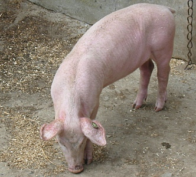

En 1857 y'avait des pliaintes dans des gâzettes entouor l'êl'vage dé bêtes à saie en Ville. L's Êtats avaient c'mandé qu'les p'tits mêssieurs fûssent èrmués d'la Ville et qu'les bels dé maîsons fûssent clièrgis et nettis.

Mais combein d'ches bêtes qu'i' y'avait à chu temps-là? Assa, y'en avait souos l'Mont ès Pendus, et l'tou des Mielles dé Bas, dans la Rue du Va et driéthe l'églyise dé Saint Mar, à Clairval, dans la Rue Journieaux, la Rue Mêssèrvy, épis par les rues Poonah, Aquila, Dorset, Winchester, Columbus... sans mentionner la bouochel'lie dé toutes les manniéthes dé bêtes dans des maîsons dans la Rue d'Cart'ret. Nou cartchulit pus d'chîn chents quétots par les c'mîns d'la Ville. Et tchi couochonn'nie! Nou n'y comprend ni lard ni couochon.
Tout coumme, la Rue ès Pors et l'Mont Couochon n'ont rein à faithe auve les bêtes à saie. Ch'est en tchi ches noms-là veinnent d'un nom d'fanmil'ye.
S'lon la couôteunme, du lard au fou 'tait l'fricot préféthé des Jèrriais à Noué et pouor les grandes occâsions. Duthant l'dgiêx-neuvième siècl'ye la faichon pâssit ès pithots et picots, sans r'nonchi les saûciches et bein seu les pais au fou à en litchi les babinnes. Nou n'a pon tréjous lard et fèves, mais pouortchi pon pâsser par not' marchi en Ville et vaie chein tch'est à vendre ès bouochel'lies? Coumme lé poète A.A. Le Gros avait êcrit:
"Du jambon et du lard en paîne:
Né v'lo d'tchi faithe un houmme heutheux.
Maûgré lé travas tchi l'enchaîne,
La vie est douoche au labouotheux."
Geraint Jennings
Viyiz étout: